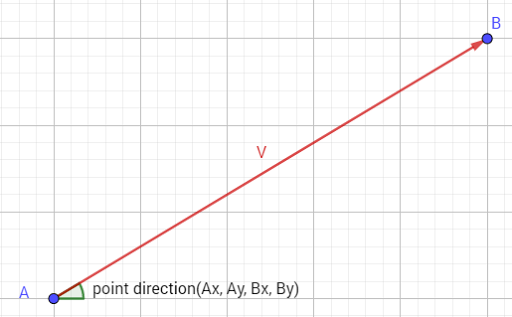

Obtiene el ángulo (en grados) del vector dado.
Sintaxis
point_direction(x1, y1, x2, y2);
Argumentos
| Argumento | Descripción |
|---|---|
| x1 | La componente horizontal del primer punto del vector. |
| y1 | La componente vertical del primer punto del vector. |
| x2 | La componente horizontal del segundo punto del vector. |
| y2 | La componente vertical del segundo punto del vector. |
Descripción
Esta función devuelve la dirección del vector formado por los puntos especificados (x1, y1) y (x2, y2) en relación con las coordenadas fijas de la sala, como se aprecia en la siguiente imagen:

Devuelve
Número real.
Ejemplo
var angulo = point_direction(x, y, enemigo.x, enemigo.y);
with(instance_create(x, y, oBala))
{
direction = angulo;
speed = 20;
}
Se obtiene el ángulo que hay entre el objeto actual y el objeto enemigo, y posteriormente se crea una bala que irá en dicha dirección con una velocidad de 20px/step.